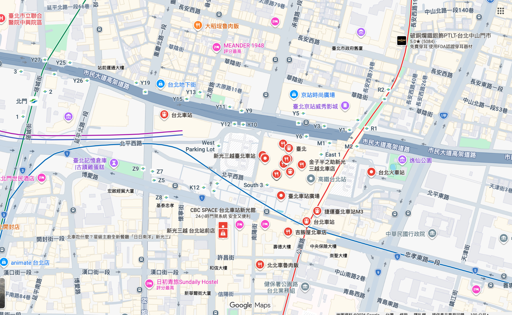

目前只列出前次資料中可辨識的推薦餐點，未取得完整官方菜單前不會補造不存在的品項。
評論是前次跨來源整理的摘要，不是即時星等或逐則原文評論。
不需要決定預算。選好餐期，再讓轉盤從適合的店家中挑選。
先選早餐、午餐或晚餐，再轉出料理類型及店家。餐期是根據整理資料推估，請留意實際營業時間。
從已收錄店家中串成一日步行美食路線。時間是建議抵達時段，不保證當日營業。
行程保存在這台裝置的目前瀏覽器中，重新開啟仍可查看；清除網站資料或換裝置可能會消失。